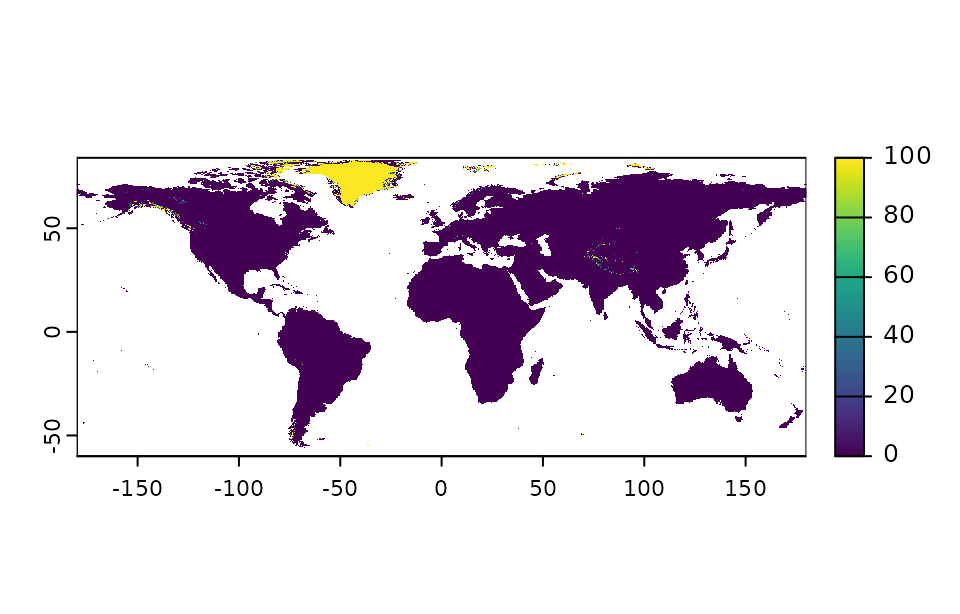
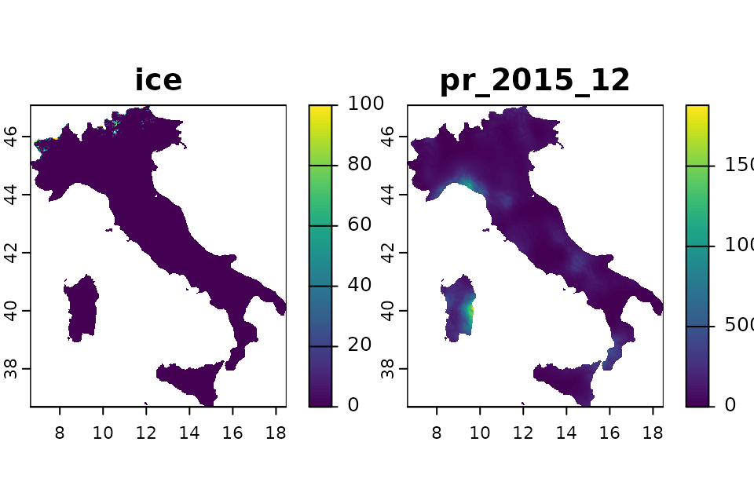
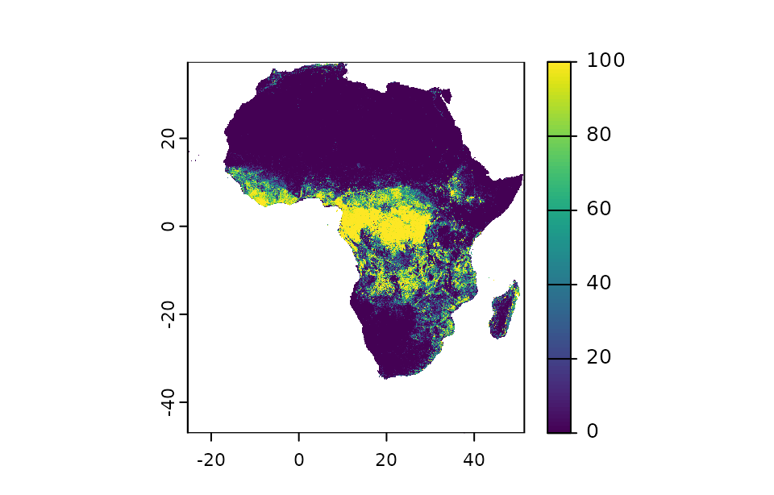
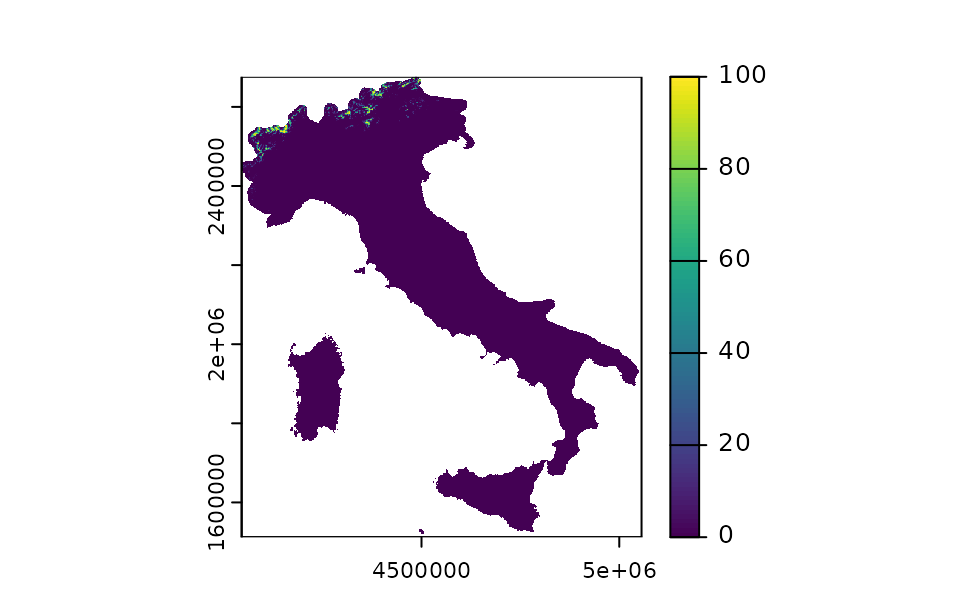
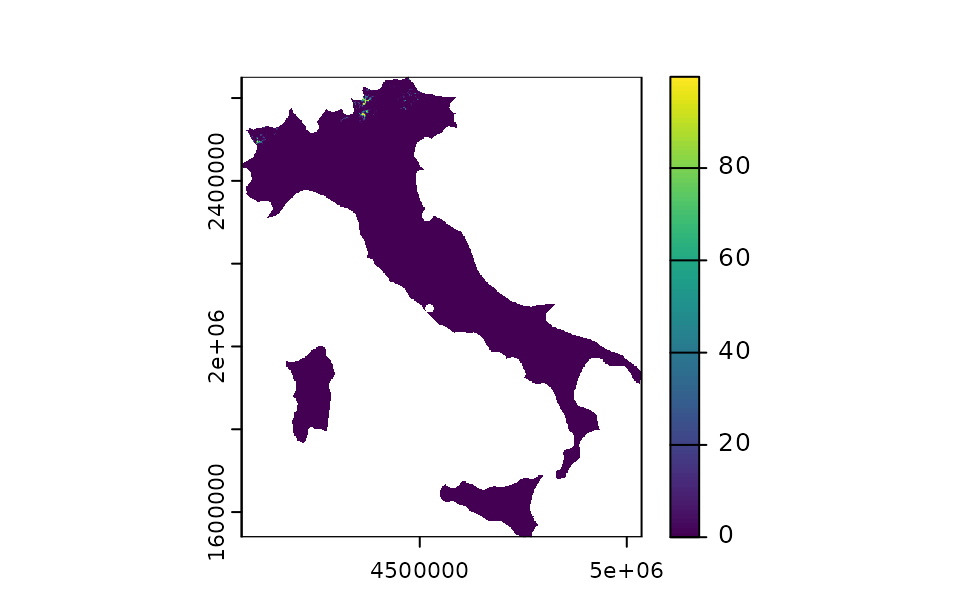
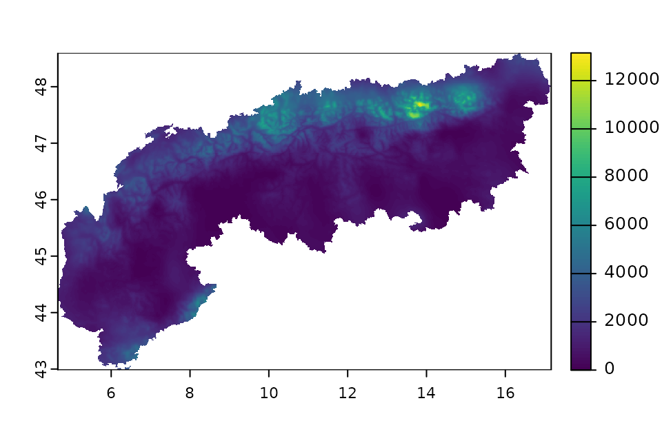
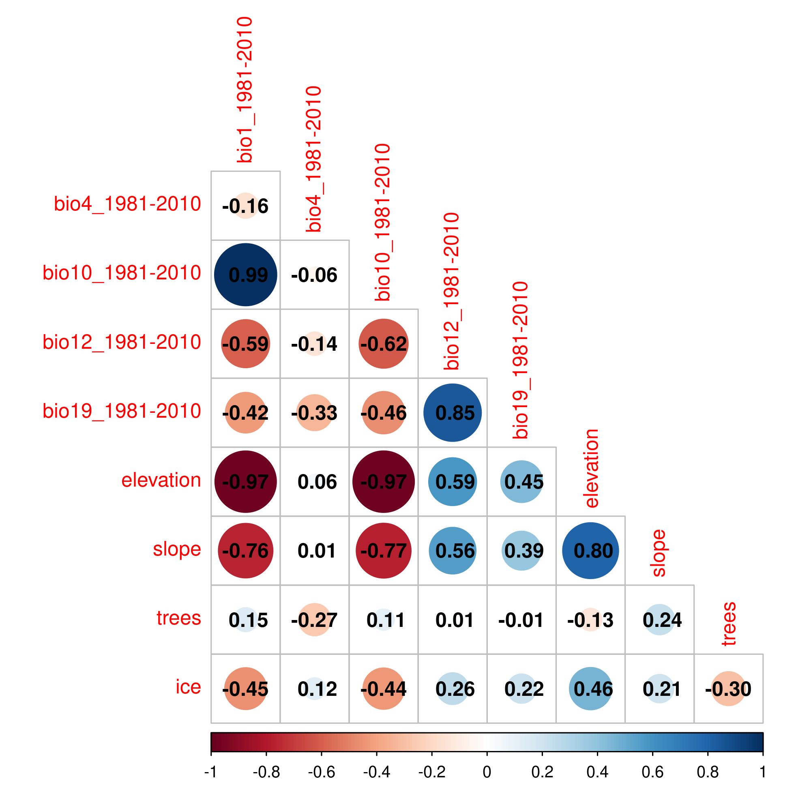
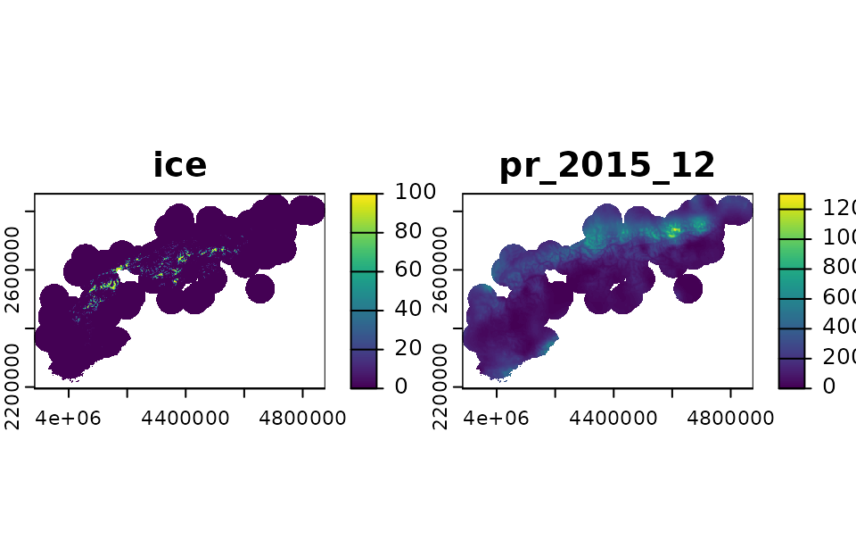

Package overview
package_overview.RmdIntroduction
envar is an R package that enables the download of
a wide range of environmental variables and their processing. In this
tutorial we explore all the potential uses of the package, to give an
idea of the breadth of uses and of the potential challenges and
shortcuts. First we load the package. When executing this command, other
five packages (dplyr, terra, sf,
corrplot, usdm) will be automatically loaded
to ensure the full functionality of the package.
Potential uses
Below, we illustrate a set of download examples covering all possible customizations of the user query, to make sure that every use is covered and illustrated.
1. Single global layer
We here show an example of download of a single variable from a single source, in this case the 1 km land cover based on ESA (Lo Parrino et al. 2025). The variable is downloaded and maintains its original extent. If not aggregated, the original grid resolution of any source is always 30 arcseconds (0.008333333°, or ~ 1 km) at the equator.
processed_singlelayer_lc <- var_get() %>%
esalandcover(vars=c("ice")) The print in the console is omitted in this tutorial to avoid output overflow. When run locally, the print in the console displays the citation(s) and doi(s) for the downloaded source(s) to make sure that users cite the proper source(s) when redacting manuscripts or using data for public presentations. Then, a progress bar is shown for each variable that is being downloaded and success messages are issued when each variable has been correctly processed. The output is a SpatRaster object from the terra package, which can be plotted and further processed.
plot(processed_singlelayer_lc)
2. Single global layer with aggregation
A multiple of the native 30 arcsecond grid (~1 km at the equator) can
be set by using an aggregation factor, defined by the argument
res. A value of res = 1 keeps the native
resolution; any value > 1 aggregates the raster by that factor.
processed_singlelayer_aggregated <- var_get(res = 100) %>%
esalandcover(vars = c("ice"))
print(processed_singlelayer_aggregated)## class : SpatRaster
## dimensions : 173, 432, 1 (nrow, ncol, nlyr)
## resolution : 0.8333333, 0.8333333 (x, y)
## extent : -180, 180, -60.16667, 84 (xmin, xmax, ymin, ymax)
## coord. ref. : lon/lat WGS 84 (EPSG:4326)
## source(s) : memory
## name : ice
## min value : 0
## max value : 1003. Multiple global layers with different spatial extents
When multiple layers from different sources are downloaded together, the output automatically crops all layers to the smallest shared extent. If more than two sources are reported, the code updates step-by-step the shared extent across all layers.
processed_bilayer_global <- var_get() %>%
chelsa(vars = c("pr"), months = 12, year = 2015) %>%
esalandcover(vars = c("ice"))The same occurs if the order of downloaded variables is inverted:
processed_bilayer_global_1 <- var_get() %>%
esalandcover(vars = c("ice")) %>%
chelsa(vars = c("pr"), months = 12, year = 2015)
# define the extents of the first SpatRaster object and of the second to check
# if they are the same
ext1 <- round(ext(processed_bilayer_global), 1)
ext2 <-round(ext(processed_bilayer_global_1), 1)
# print the resulting extents
print(ext1)## SpatExtent : -180, 180, -60, 84 (xmin, xmax, ymin, ymax)
print(ext2)## SpatExtent : -180, 180, -60, 84 (xmin, xmax, ymin, ymax)4. Crop and mask to a country
A country can be specified by name (case‑insensitive). The output is cropped/masked to that country.
processed_bilayer_country <- var_get(country = "Italy") %>%
esalandcover(vars = c("ice")) %>%
chelsa(vars = c("pr"), months = 12, years = 2015)
plot(processed_bilayer_country)
5. Crop and mask to a continent
processed_singlelayer_africa <- var_get(continent = "Africa", buffer = 10) %>%
esalandcover(vars = c("forest"))
plot(processed_singlelayer_africa)
Some continents such as Europe have a complex shape if downloaded directly with the method just showed, and the invalid resulting geometry provides unrealistic outputs. Thus, in some cases it is recommended to import an external shapefile (e.g., of Europe) where all geometries are valid, or to build the continent step by step defining the countries in the rnaturalearth R package and manually creating a union of countries.
6. Projecting to a PRS
The single layer is downloaded and maintains its original extent. But
additionally it is projected to the desired Coordinate Reference System
(CRS). The default CRS in envar is the Geographic Reference
System (GRS) WGS 84 (EPSG: 4326). This is the most commonly used GRS for
global analyses. GRS assume that the Earth is an ellipsoid (or spheroid)
and provide coordinates based on a 3D surface with degrees and
latitude-longitude values. However, these systems are not ideal to
compute distances as the meaning of degrees changes based on the
location on earth (e.g., 1 degree of longitude corresponds to ~ 111 km
at the equator but approaches zero towards the poles). Additionally,
users might want to improve spatial analysis accuracy, visualize data in
a specific projection, or align results with other data that use a
different CRS. Thus, a Projected Reference System (PRS) can be used,
where coordinates are based on the location on a 2D system. The
conversion from a GRS to a PRS always implies a certain amount of
distortion, and thus different PRS are optimized for different areas of
the globe to locally reduce distortion when moving from a 3D to a 2D
representation. Thus, users can use the argument “crs” in the
var_get() function to specify the desired CRS. Here we show
an example of download of a single variable from a single source, in
this case the 1 km land cover based on ESA (Lo
Parrino et al. 2025), and its projection to the local
equal-area projection (EPSG:3035). Inside the crs argument, a number or
character representing the code of the PRS must be provided. If nothing
is specified, 4326 is assumed. The crs can also be specified with the
prefix ‘ESRI’ or ‘EPSG’ according to the system, e.g. “EPSG:4326” or
“ESRI:54009”.
processed_singlelayer_projected <- var_get(country = "Italy", crs=3035) %>%
esalandcover(vars=c("ice"))
print(processed_singlelayer_projected)## class : SpatRaster
## dimensions : 1144, 991, 1 (nrow, ncol, nlyr)
## resolution : 1000, 1000 (x, y)
## extent : 4055312, 5046312, 1522080, 2666080 (xmin, xmax, ymin, ymax)
## coord. ref. : ETRS89-extended / LAEA Europe (EPSG:3035)
## source(s) : memory
## name : ice
## min value : 0.0000
## max value : 99.9728
plot(processed_singlelayer_projected)
7. Apply a buffer to a shape
A positive buffer expands the shape by the specified number of kilometers; a negative buffer shrinks it. Units are always km for the user. If the CRS is left to the default (crs=“EPSG:4326”), the function used by the package (st_buffer) automatically transforms the kilometers in degrees so that the buffer is circular on the 3D surface (and the buffer might thus appear non-circular if plotted in 2D). However, it is recommended to always specify a projected CRS when using buffers to avoid potential distortions.
processed_singlelayer_buffer <- var_get(country = "Italy", crs = 3035, buffer = 10) %>%
esalandcover(vars = c("ice"))
plot(processed_singlelayer_buffer)
Negative buffer example:
processed_singlelayer_negative_buffer <- var_get(country = "Italy", crs = 3035, buffer = -10) %>%
esalandcover(vars = c("ice"))
plot(processed_singlelayer_negative_buffer)
A buffer at global scale (no shape or data.frame or country defined) triggers an error (not shown here):
processed_singlelayer_global_buffer <- var_get(buffer = 10) %>%
esalandcover(vars = c("ice"))8. Use a local shapefile (polygon)
The user can load a shapefile of type POLYGON and use it to crop/mask
the downloaded variables. Here we use the already included European Alps
shapefile (Alps()).
processed_bilayer_shapefile <- var_get(shape = Alps) %>%
esalandcover(vars = c("ice")) %>%
chelsa(vars = c("pr"), months = 12, year = 2015)
plot(processed_bilayer_shapefile[[2]])
9. Add a correlation check
It is possible to call the corr_check() function at the
bottom of the code to enable an automatic test of correlation among the
downloaded variables over the defined spatial area and resolution. Doing
this will produce a list containing the processed SpatRaster, Pearson
pairwise correlations, VIF statistics, and a saved correlation plot.
processed_bilayer_corr_check <- var_get(shape = Alps, crs = 3035, res = 2, buffer = 10) %>%
chelsa(vars = c("bio1", "bio4", "bio10", "bio12", "bio19"),
years = "1981-2010") %>%
topography(vars = c("elevation", "slope")) %>%
esalandcover(vars = c("trees", "ice")) %>%
corr_check()The output will thus be a list that contains the following elements: “data” (the SpatRaster or data.frame with your downloaded data), “correlation_matrix” containing a matrix of Pairwise Pearson’s correlation coefficients between all variables, “vif” a data.frame containing the Variance Inflation Factors for each variable, a “summary” that reports if and which variables have a Pearson’s correlation coefficient higher than |0.6| and/or a VIF higher than 3. Lastly, the “plot_path” specifies the local directory to which a plot of the Pearson’s pairwise correlation was saved.
# View the Pearson's pairwise correlation matrix
print(processed_bilayer_corr_check$correlation_matrix)## bio1_1981-2010 bio4_1981-2010 bio10_1981-2010 bio12_1981-2010
## bio1_1981-2010 1.0000000 -0.16218091 0.99419247 -0.593023380
## bio4_1981-2010 -0.1621809 1.00000000 -0.05811524 -0.140826490
## bio10_1981-2010 0.9941925 -0.05811524 1.00000000 -0.616575650
## bio12_1981-2010 -0.5930234 -0.14082649 -0.61657565 1.000000000
## bio19_1981-2010 -0.4231690 -0.33187576 -0.46121816 0.846422025
## elevation -0.9701695 0.05564816 -0.97217707 0.587809843
## slope -0.7636451 0.00524989 -0.77230823 0.558445357
## trees 0.1481525 -0.26620120 0.11469130 0.007079224
## ice -0.4510495 0.12101796 -0.43809075 0.259209359
## bio19_1981-2010 elevation slope trees ice
## bio1_1981-2010 -0.42316901 -0.97016954 -0.76364511 0.148152525 -0.4510495
## bio4_1981-2010 -0.33187576 0.05564816 0.00524989 -0.266201199 0.1210180
## bio10_1981-2010 -0.46121816 -0.97217707 -0.77230823 0.114691295 -0.4380907
## bio12_1981-2010 0.84642203 0.58780984 0.55844536 0.007079224 0.2592094
## bio19_1981-2010 1.00000000 0.44669367 0.38982142 -0.014066794 0.2196525
## elevation 0.44669367 1.00000000 0.80267782 -0.130484035 0.4600400
## slope 0.38982142 0.80267782 1.00000000 0.235548954 0.2069919
## trees -0.01406679 -0.13048403 0.23554895 1.000000000 -0.2964818
## ice 0.21965250 0.46003996 0.20699186 -0.296481827 1.0000000
# View the Variance Inflation Factor values
print(processed_bilayer_corr_check$vif)## Variables VIF
## 1 bio1_1981-2010 3056.493047
## 2 bio4_1981-2010 35.774109
## 3 bio10_1981-2010 2623.044535
## 4 bio12_1981-2010 5.064462
## 5 bio19_1981-2010 4.451829
## 6 elevation 40.736641
## 7 slope 4.761601
## 8 trees 1.716337
## 9 ice 1.437932To better understand the structure of correlation, we can also analyze the correlation plot that was locally stored.

10. Use a local shapefile (points)
If a POINT shapefile is used and no buffer is applied, the output will be a data.frame containing columns: ID (integer going from 1 to the length of the dataset), X (longitude), Y (latitude), and the extracted values over the specified points.
points <- sf::st_sample(Alps, size = 100, type = "random")
processed_singlelayer_points <- var_get(shape = points) %>%
esalandcover(vars = c("ice"))
processed_bilayer_points <- var_get(shape = points) %>%
esalandcover(vars = c("ice")) %>%
chelsa(vars = c("pr"), months = 12, year = 2015)
# visualize the resulting data.frame with the extracted values when only one source was used
head(processed_singlelayer_points)## ID X Y ice
## 1 1 14.293095 45.84910 0.0
## 2 2 10.379406 47.10659 4.6
## 3 3 7.218862 45.97181 0.0
## 4 4 15.116421 46.99428 0.0
## 5 5 6.245002 43.60734 0.0
## 6 6 9.976589 47.06042 0.2
# visualize the resulting data.frame with the extracted values when two or more sources were used
head(processed_bilayer_points)## ID X Y ice pr_2015_12
## 1 1 14.293095 45.84910 0 27
## 2 10 13.017556 47.67438 0 4704
## 3 100 7.380845 46.64600 0 2819
## 4 11 6.690061 44.42392 0 642
## 5 12 11.896332 46.98289 0 1934
## 6 13 10.792680 47.94157 0 363111. Add a correlation check when using points
This will create a similar result as for the correlation test applied to a SpatRaster object, but instead of a set of rasters, the first element of the resulting list will be a data.frame with the extracted values.
processed_bilayer_points_corr_check <- var_get(shape = points) %>%
esalandcover(vars = c("ice")) %>%
chelsa(vars = c("pr"), months = 12, year = 2015) %>%
corr_check()
head(processed_bilayer_points_corr_check[[1]])## ID X Y ice pr_2015_12
## 1 1 14.293095 45.84910 0 27
## 2 10 13.017556 47.67438 0 4704
## 3 100 7.380845 46.64600 0 2819
## 4 11 6.690061 44.42392 0 642
## 5 12 11.896332 46.98289 0 1934
## 6 13 10.792680 47.94157 0 363112. Use points as a data.frame
Points can be fed into the package in the form of a data.frame with only two columns that represent coordinates. Column names must be X and Y, reporting the longitude and latitude, respectively. The CRS is assigned based on user input (default: 4326).
points3035 <- st_transform(points, 3035)
points3035df <- as.data.frame(st_coordinates(points3035))
processed_singlelayer_pointsdf <- var_get(pointsdf = points3035df, crs = 3035) %>%
esalandcover(vars = c("ice"))
processed_bilayer_pointsdf <- var_get(pointsdf = points3035df, crs = 3035) %>%
esalandcover(vars = c("ice")) %>%
chelsa(vars = c("pr"), months = 12, year = 2015)
# visualize the resulting data.frame when using only one source
head(processed_singlelayer_pointsdf)## ID X Y ice
## 1 1 4654691 2535881 0.0
## 2 2 4349822 2665967 4.6
## 3 3 4105238 2543911 0.0
## 4 4 4710157 2666850 0.0
## 5 5 4017225 2285211 0.0
## 6 6 4319220 2660765 0.2
# visualize the resulting data.frame when using multiple sources
head(processed_bilayer_pointsdf)## ID X Y ice pr_2015_12
## 1 1 4654691 2535881 0 NA
## 2 10 4547670 2733597 0 NA
## 3 100 4120335 2618276 0 NA
## 4 11 4056979 2373976 0 NA
## 5 12 4465380 2653999 0 NA
## 6 13 4380252 2758982 0 NA13. Apply a buffer when using points
A buffer (in km) expands the points to a polygon and all the variables that are downloaded are subsequently cropped to that shape. This option can be very useful for instance in Species Distribution Modelling, whereby records of species presence are often known but not absences. The so-called pseudo-absences (i.e. simulated absences of species) and background points (points used to define the background environmental conditions and compare them to presences, as done in the Maximum Entropy algorithm) are typically picked in a defined radius around the presences, to define areas that could theoretically be reached by the species via dispersal. Additionally, picking pseudo-absence/background points in a buffer around presences allows to better simulate the spatial sampling effort patterns and replicate them.
processed_bilayer_points_buffer <- var_get(pointsdf = points3035df, crs = 3035, buffer = 50) %>%
esalandcover(vars = c("ice")) %>%
chelsa(vars = c("pr"), months = 12, year = 2015)
plot(processed_bilayer_points_buffer)
Conclusion
In this tutorial we have gone through all the potential ways in which the user can tailor the download and processing of data. For simplicity we have relied only on a few sources, but many more are available and can be checked at the reference or at the detailed explanation of all sources and variables.